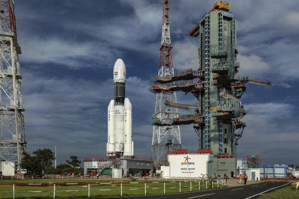
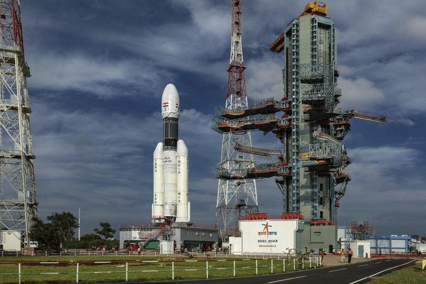

Biography (The Missile Man)
(1931-2015)
A.P.J. Abdul Kalam, in full Avul Pakir
Jainulabdeen Abdul Kalam, (born October 15, 1931, Rameswaram, India—died July 27, 2015, Shillong),
Indian scientist and politician who played a leading role in the development of India’s missile and
nuclear weapons programs. He was president of India from 2002 to 2007.
Kalam earned a degree in aeronautical engineering
from the Madras Institute of Technology and in 1958 joined the Defence Research and Development Organisation
(DRDO). In 1969 he moved to the Indian Space Research Organisation, where he was project director of the
SLV-III, the first satellite launch vehicle that was both designed and produced in India. Rejoining DRDO in
1982, Kalam planned the program that produced a number of successful missiles, which helped earn him the
nickname “Missile Man.” Among those successes was Agni, India’s first intermediate-range ballistic missile,
which incorporated aspects of the SLV-III and was launched in 1989.From 1992 to 1997 Kalam was scientific
adviser to the defense minister, and he later served as principal scientific adviser (1999–2001) to the
government with the rank of cabinet minister. His prominent role in the country’s 1998 nuclear weapons tests
solidified India as a nuclear power and established Kalam as a national hero, although the tests caused
great concern in the international community. In 1998 Kalam put forward a countrywide plan called Technology
Vision 2020, which he described as a road map for transforming India from a less-developed to a developed
society in 20 years. The plan called for, among other measures, increasing agricultural productivity,
emphasizing technology as a vehicle for economic growth, and widening access to health care and education.
In 2002 India’s ruling National Democratic Alliance (NDA) put forward Kalam
to succeed outgoing President Kocheril Raman Narayanan. Kalam was nominated by the Hindu nationalist
(Hindutva) NDA even though he was Muslim, and his stature and popular appeal were such that even the main
opposition party, the Indian National Congress, also proposed his candidacy. Kalam easily won the election
and was sworn in as India’s 11th president, a largely ceremonial post, in July 2002. He left office at the
end of his term in 2007 and was succeeded by Pratibha Patil, the country’s first woman president.
10 Inspiring Quotes Of APJ Abdul Kalam That Will Get You Started
- “Don’t take rest after your first victory because if you fail in second, more lips are waiting to say that
your first victory was just luck.”
- “To succeed in your mission, you must have a single-minded devotion to your goal.”
- “If you fail, never give up because FAIL means “First Attempt In Learning.”
- “All of us do not have equal talent. But , all of us have an equal opportunity to develop our talents.”
- “Be active! Take on responsibility! Work for the things you believe in. If you do not, you are surrendering
your fate to others.”
- “You cannot change your future, but you can change your habits, and surely your habits will change your
future.”
- “We have no ability to be equal to all have opportunities equal to their ability lane.”
- “It is very Easy To Defeat Someone, But it is Very Hard To Win Someone.”
- “If you want to shine like a sun, First burn like the sun.”
- “Your best teacher is your last mistake.”